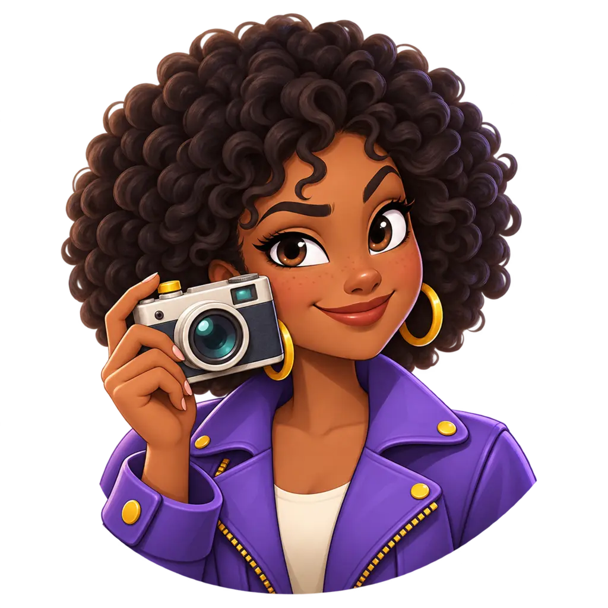
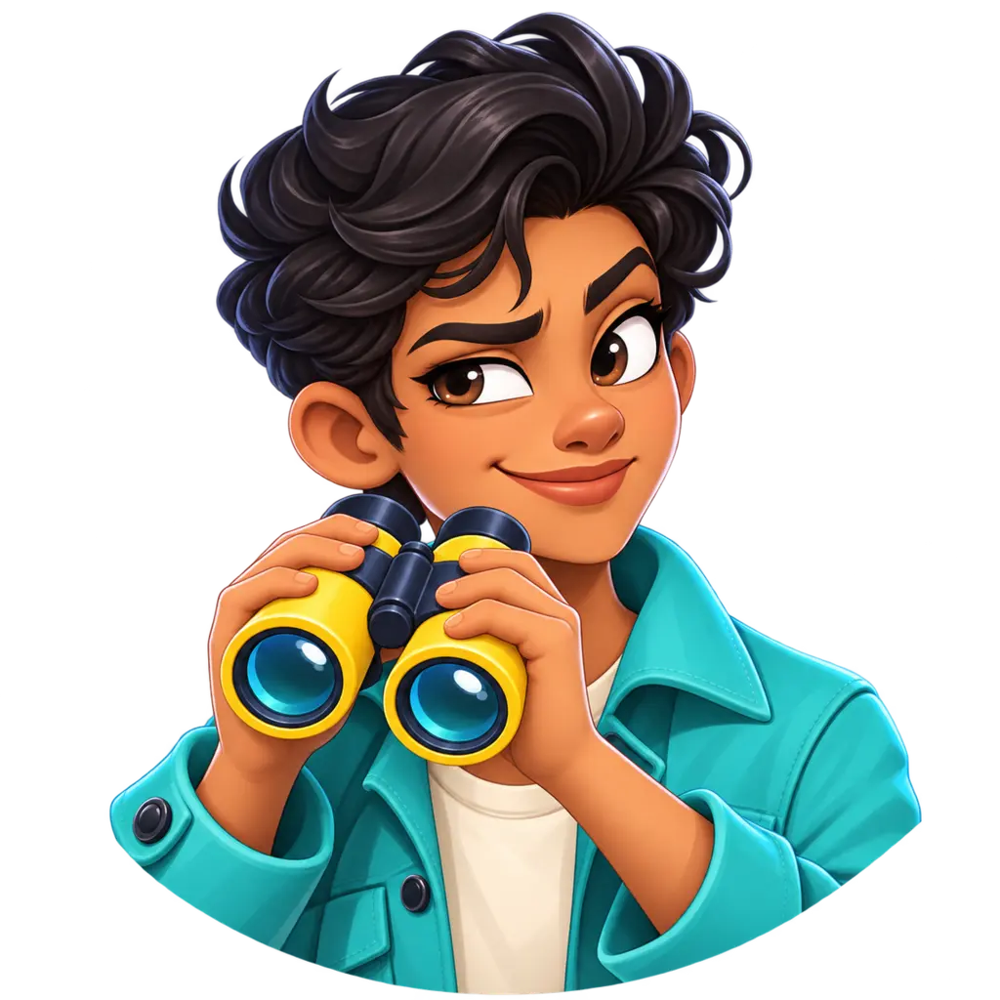
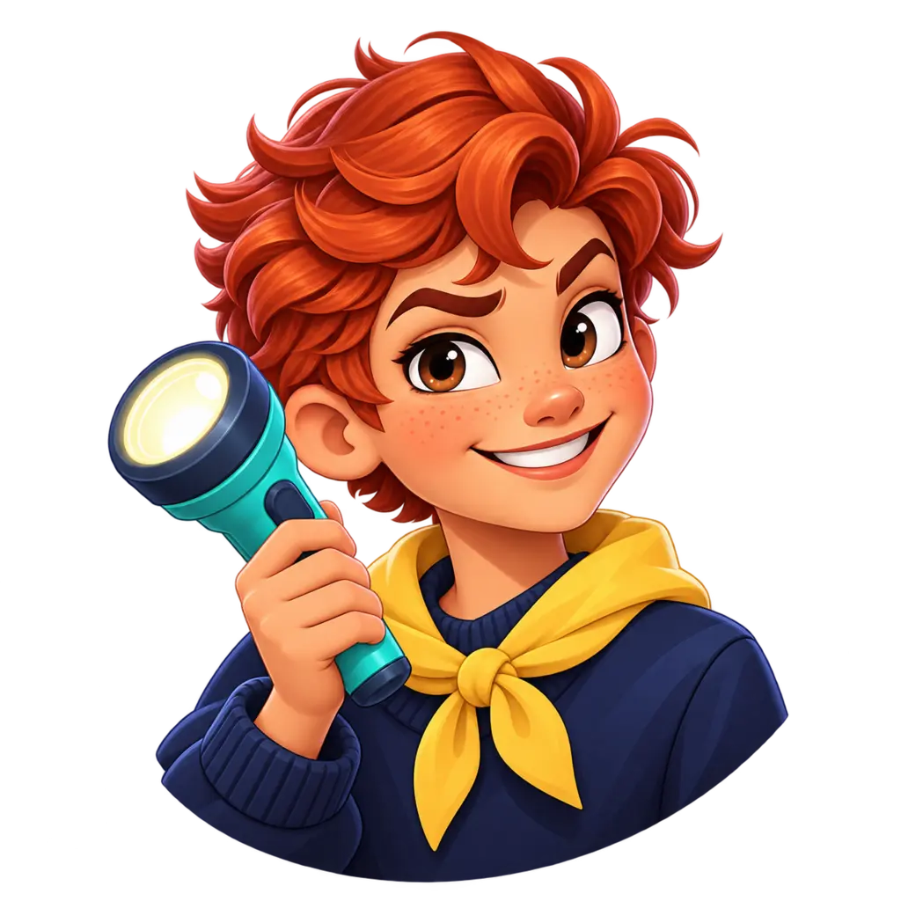

01 · פחות מארבעה · searching
9:41●●● ▰
מרכיבים קבוצת שחקנים
עוד 2 שחקנים כדי להתחילממשיכים לחפש שחקנים מתאימים בקטגוריות שבחרתם.
1:42
הקבוצה שלך2 מתוך 8
דוראתם

נועה
⌕מחפשים שחקן...
⌕מחפשים שחקן...
⌕מחפשים שחקן...
⌕מחפשים שחקן...
⌕מחפשים שחקן...
⌕מחפשים שחקן...
נא לא לעזוב עמוד זה.
הטיימר מציג את הזמן שנותר עד שלא נמצאה התאמה.
02 · ארבעה עד חמישה · waiting_for_more
9:41●●● ▰
מרכיבים קבוצת שחקנים
יש מספיק שחקנים!מחכים לשחקנים נוספים ומתחילים כשהזמן מסתיים.
28
הקבוצה שלך4 מתוך 8
דוראתם

יואב
אריאל
רועי
⌕מחפשים שחקן...
⌕מחפשים שחקן...
⌕מחפשים שחקן...
⌕מחפשים שחקן...
נא לא לעזוב עמוד זה.
ממתינים עד 30 שניות מהשחקן הרביעי; הספירה מתחלפת כשמגיע השישי.
03 · שישה עד שמונה · countdown
9:41●●● ▰
מרכיבים קבוצת שחקנים
הקבוצה מוכנה!המשחק מתחיל בעוד רגע.
5
הקבוצה שלך6 מתוך 8
דוראתם
יואב
אריאל
רועי

ליאור
מאיה
⌕מחפשים שחקן...
⌕מחפשים שחקן...
נא לא לעזוב עמוד זה.
ספירה סמכותית של 5 שניות; המשחק מתחיל אוטומטית.
04 · לא נמצאה התאמה · matchmaking.noMatch
9:41●●● ▰
לא נמצא משחק בקטגוריות שבחרתם
אפשר לנסות שוב עם אותן קטגוריות, או לבחור קטגוריות אחרות.
האיור כבר קיים בפרויקט. החיפוש הסתיים, לכן הודעת “נא לא לעזוב” אינה מוצגת כאן.